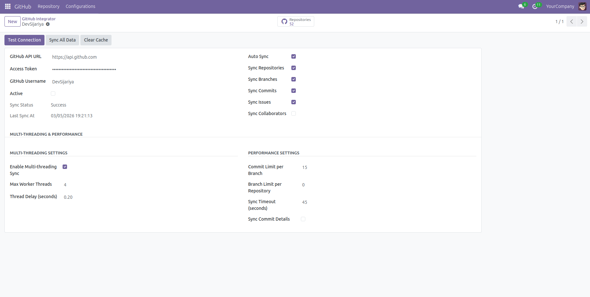
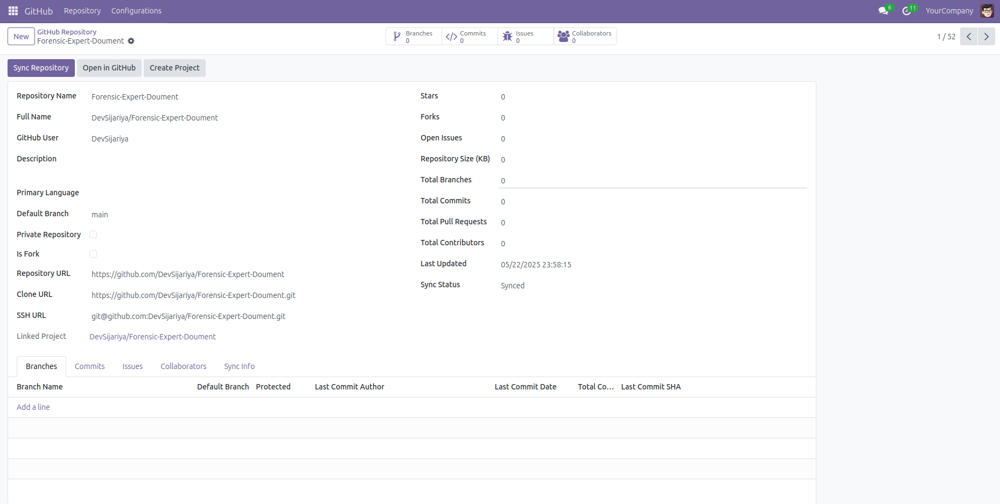
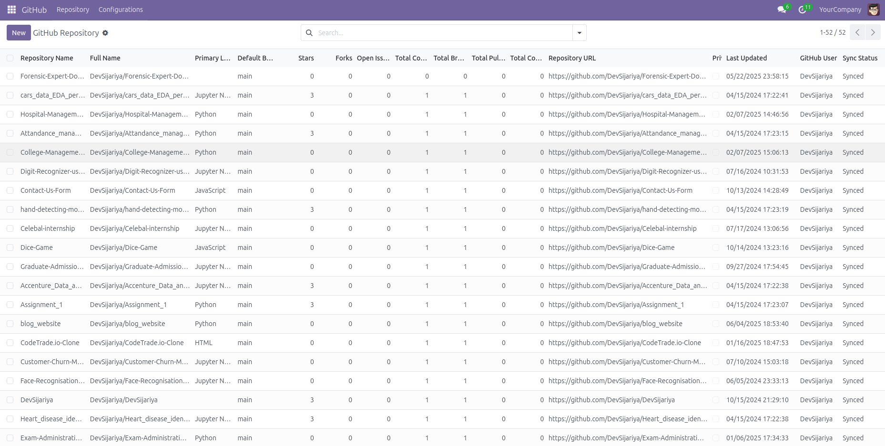
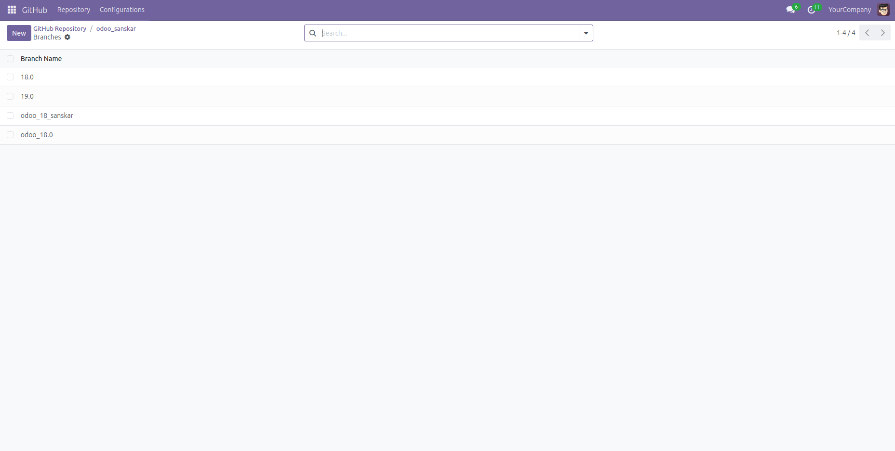
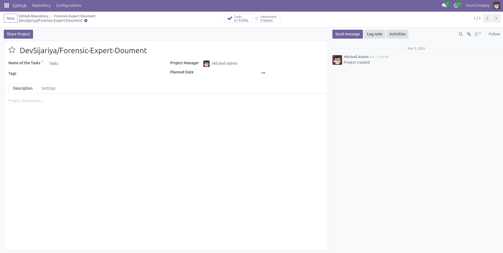

GitHub Integrator
Connect your GitHub account to Odoo and manage repositories, branches,
commits, issues, and collaborators in one place. Keep development activity
visible for project and operations teams inside Odoo.
Module Functionality
- 🔗Authenticate with GitHub API using personal access token and username.
- 🔄Sync repository data into Odoo with selectable sync controls.
- 🌿Fetch branches and commit history with optional commit detail sync.
- 📝Track GitHub issues and collaborators directly on each repository record.
- 🛠Use sync performance options: threading, timeout, delays, and item limits.
- 📁Create linked Odoo projects from repositories for development workflow alignment.
Key Features
- ✅One-click full synchronization from GitHub into dedicated Odoo models.
- ✅Repository-level actions to view branches, commits, issues, and collaborators.
- ✅Open repository directly in GitHub from Odoo form view.
- ✅Sync status tracking with last sync timestamp for monitoring.
- ✅Pagination-aware data collection for large repositories and accounts.
- ✅Project integration via linked `project.project` records.
Workflow Steps
Step 1: Configure GitHub Integration
Enter GitHub API URL, access token, username, and sync options, then save configuration.

Configuration screen for GitHub authentication and sync settings.
Step 2: Sync and Review Repositories
Run sync to import repositories and open repository forms to review metadata and actions.

Repository form with sync status, links, and related actions.
Step 3: Monitor Repository Data
Track repository-level details, last updates, counts, and quick navigation from overview pages.

Repository overview page for monitoring synced GitHub information.
Step 4: Analyze Branches and Related Records
Open branch, commit, issue, and collaborator views to inspect development activity in detail.

Branches view connected to commits, issues, and collaborators.
Step 5: Create Linked Odoo Project
Create and link an Odoo project from the repository so development and project execution stay connected.

Project view linked with GitHub repository for end-to-end workflow tracking.